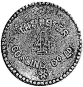
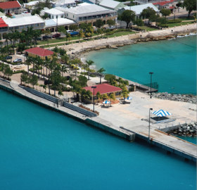
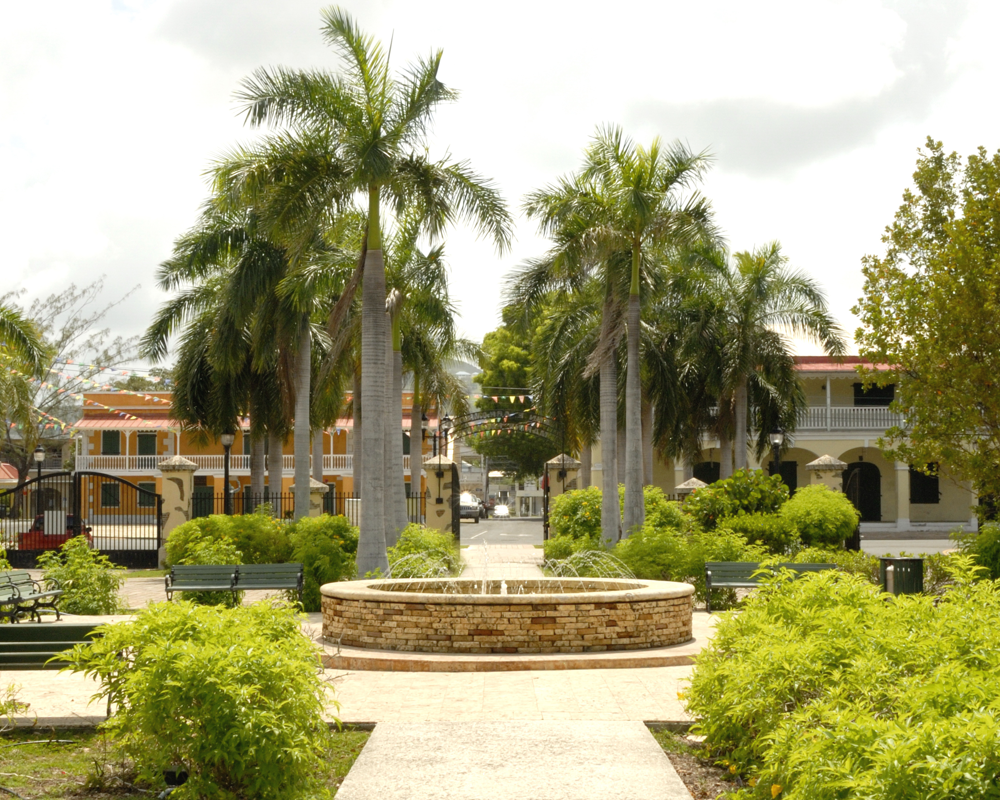
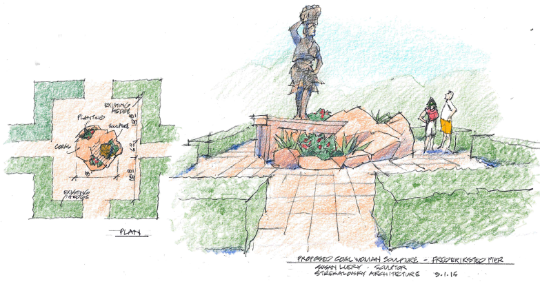
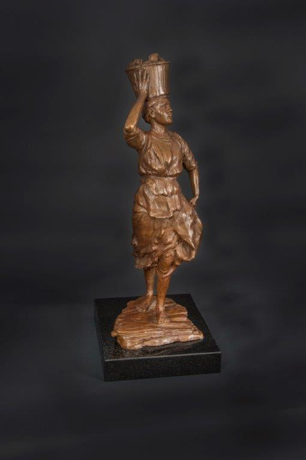
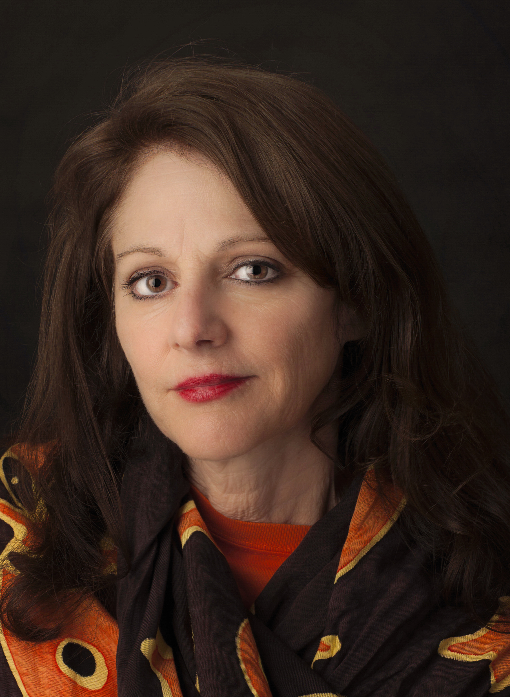

the caribbean museum center for the arts
the coal woman
A monumental sculpture installation for Frederiksted Pier honoring the coal women of the Virgin Islands

For almost a century, this is all women were paid for carrying baskets of coal that fueled the ships throughout the Caribbean ports.
The Caribbean Museum Center for the Arts on St. Croix is excited to announce plans to erect a dynamic, 14-foot-tall sculpture created by internationally known artist Susan Luery for the cruise ship pier in Frederiksted.


A globally recognizable landmark, the sculpture will celebrate the history of the Caribbean dockworkers and will welcome visitors from around the world as they arrive at port to the island.
Architectural Plans

by Vcevy Strekalovsky
Standing tall on the pier, facing the arriving ships, the bronze sculpture of the female dockworker will provide a dramatic vision at this major port of entry, all while her flowing, windswept garments conjure images of the port's historic and colonial past.
the model

The sculpture will be created by internationally known artist Susan Luery.
Born in Baltimore, she attended the Maryland Institute College of Art and later refined her gift for sculpting in Carrara, Italy, where she worked with maestro sculptor Alberto Starapani.
She is best known for such monumental works as Babe's Dream and the Cal Ripken, Jr. Monument. Her work can be found in private, public, and museum collections worldwide.
Join us and be part of our effort in honoring these hardworking women of our past
Donate today
Sponsor Recognition
The names of our sponsors will be featured on the permanent bronze plaque at the site of the sculpture.
A bronze, signed and numbered, limited edition, museum-quality fine art collectable version of the Coal Woman sculpture will be presented to benefactors for sponsorship of over $25 thousand.
Sponsors will be granted use of the print image of the statue on publicity materials and related 2D media.
Send all checks & inquiries to